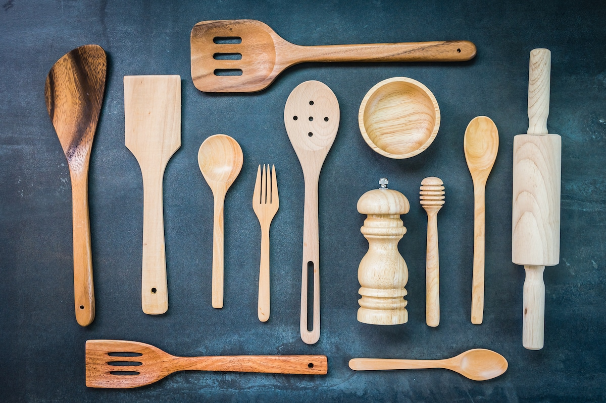

Categorías
Productos Destacados
-
cuero de PU
Está compuesto por una capa de poliuretano sobre una base de tejido, lo que le confiere un aspecto similar al cuero tradicional. Es duradero, resistente al agua y fácil de limpiar.
-
Ceramica Piso Lindo Natural
Con su diseño inspirado en la belleza de la naturaleza, esta cerámica presenta tonalidades suaves y texturas sutiles que brindan calidez y sofisticación a cualquier ambiente.
-
Telas Vichy a rayas
Con su patrón a cuadros en tonos vibrantes, estas telas añaden un toque de nostalgia y frescura a cualquier proyecto de costura o decoración.